Guide complet de l'interface
Ce guide te montre, capture à l'appui, où se trouve chaque chose dans Blender et à quoi elle sert : chaque menu est ouvert et chaque item est expliqué dans un tableau. L'idée est simple : quand tu cherches une commande, tu la trouves ici, sans aller sur une vidéo ou un autre site.
Chaque capture est cliquable : clique dessus pour l'agrandir en plein écran (Échap ou un clic pour fermer). Les raccourcis sont indiqués entre parenthèses (ex. Ctrl S). Certains items ouvrent un sous-menu (petite flèche ▸ à droite).
La barre supérieure
Tout en haut de la fenêtre, la barre supérieure (Topbar) contient les menus qui agissent sur tout le fichier et l'application : ouvrir/enregistrer, préférences, rendu, fenêtres, aide. À droite se trouvent aussi les onglets d'espaces de travail (Layout, Modeling, Sculpting…).
Menu File — fichiers, import/export
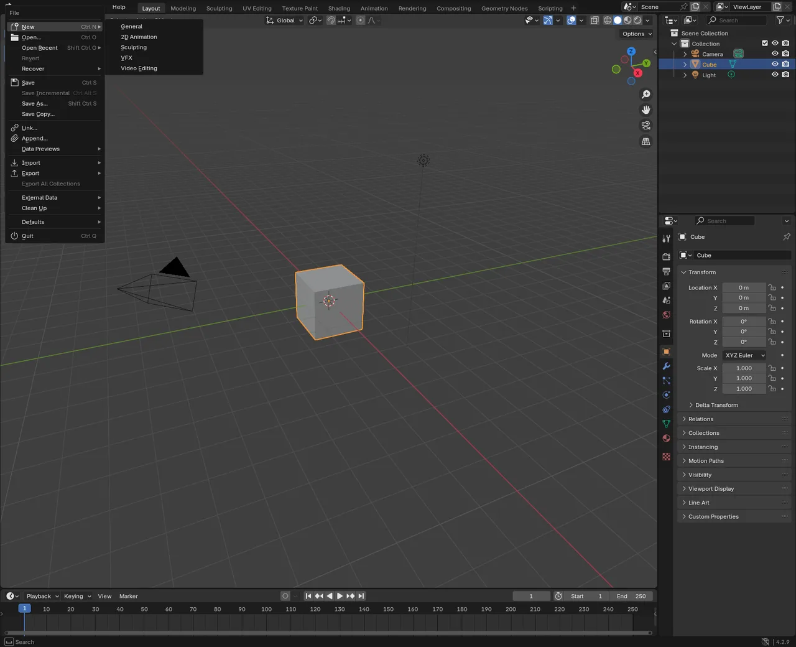
.blend et aux échanges avec d'autres logiciels.| Item | À quoi ça sert |
|---|---|
| New (Ctrl N) | Nouveau fichier à partir d'un modèle (General, 2D Animation, Sculpting, VFX, Video Editing). |
| Open… (Ctrl O) | Ouvrir un fichier .blend existant. |
| Open Recent | Liste des fichiers récemment ouverts (accès rapide). |
| Revert | Recharger le fichier depuis le disque (annule les changements non enregistrés). |
| Recover | Récupérer la dernière session ou une sauvegarde auto après un crash. |
| Save (Ctrl S) | Enregistrer le fichier en cours. |
| Save Incremental | Enregistre une nouvelle version numérotée (fichier_001, _002…). |
| Save As… (Shift Ctrl S) | Enregistrer sous un nouveau nom/emplacement. |
| Save Copy… | Enregistre une copie sans changer le fichier courant. |
| Link… | Référencer (lier) des données d'un autre .blend (elles restent éditées dans le fichier source). |
| Append… | Importer une copie indépendante d'objets/matériaux d'un autre .blend. |
| Data Previews | Générer/actualiser les vignettes d'aperçu des données. |
| Import | Importer d'autres formats : FBX, glTF/GLB, OBJ, USD, STL, Alembic… (venu d'un autre logiciel). |
| Export | Exporter vers ces mêmes formats : c'est ici qu'on sort un asset vers un moteur (voir B11). |
| Export All Collections | Exporter chaque collection dans son propre fichier, en lot. |
| External Data | Gérer les fichiers liés : empaqueter (pack) les textures dans le .blend, ou les rendre externes. |
| Clean Up | Purger les données orphelines (non utilisées) pour alléger le fichier. |
| Defaults | Enregistrer le fichier de démarrage (Save Startup File) ou charger les réglages d'usine. |
| Quit (Ctrl Q) | Quitter Blender. |
Menu Edit — annuler, rechercher, préférences
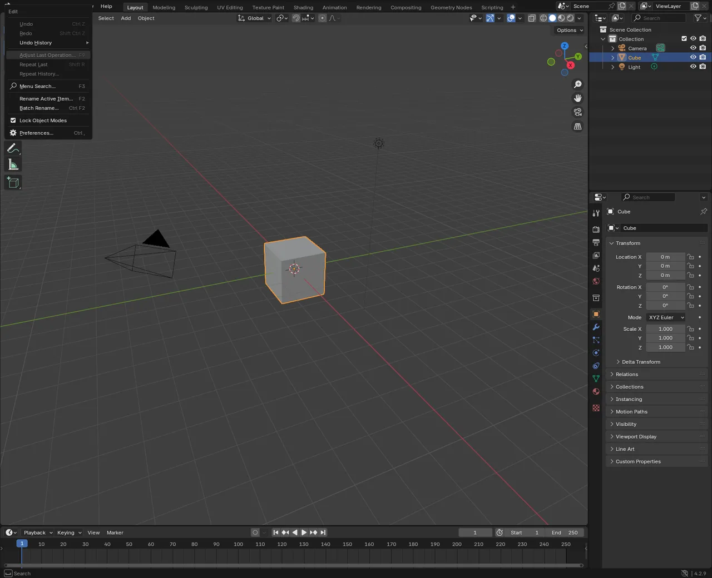
| Item | À quoi ça sert |
|---|---|
| Undo (Ctrl Z) | Annuler la dernière action. |
| Redo (Shift Ctrl Z) | Refaire l'action annulée. |
| Undo History | Liste des étapes : revenir plusieurs actions en arrière d'un coup. |
| Adjust Last Operation (F9) | Rouvrir le panneau de réglages de la dernière opération (ex. nombre de segments d'un bevel). |
| Repeat Last (Shift R) | Répéter la dernière commande. |
| Repeat History | Choisir dans l'historique une commande à répéter. |
| Menu Search… (F3) | Chercher n'importe quelle commande par son nom : l'outil le plus utile quand on débute. |
| Rename Active Item… (F2) | Renommer l'objet actif directement dans le viewport. |
| Batch Rename… (Ctrl F2) | Renommer plusieurs éléments d'un coup avec des règles. |
| Lock Object Modes | Empêche de changer de mode en cliquant sur un autre objet (évite les erreurs). |
| Preferences… (Ctrl ,) | Ouvrir les Préférences : GPU de rendu, add-ons, thème, raccourcis (voir B1). |
Menu Render — lancer et voir un rendu
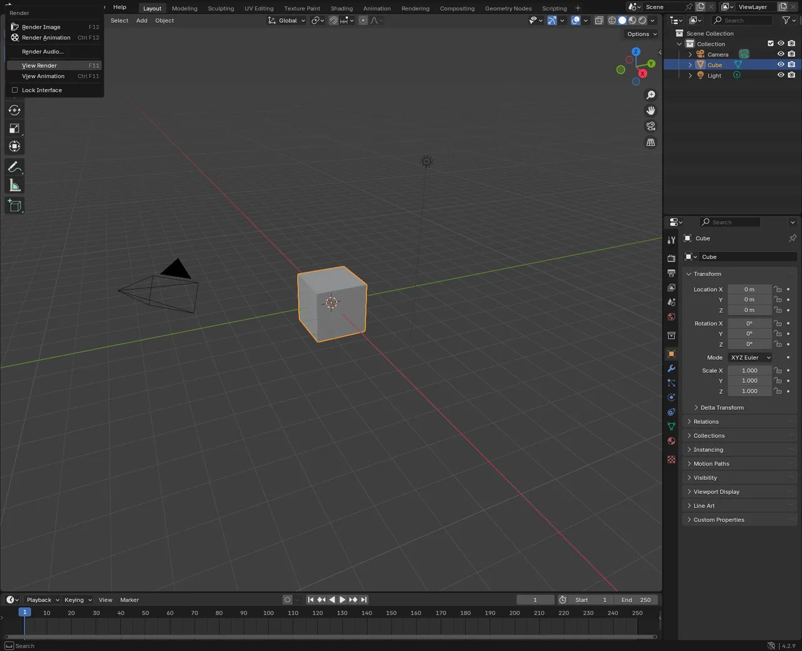
| Item | À quoi ça sert |
|---|---|
| Render Image (F12) | Calculer une image depuis la caméra active. |
| Render Animation (Ctrl F12) | Calculer toutes les images de l'animation (une séquence). |
| Render Audio… | Exporter la bande-son de la scène en fichier audio. |
| View Render (F11) | Afficher/masquer la fenêtre du dernier rendu. |
| View Animation (Ctrl F11) | Lire la séquence rendue. |
| Lock Interface | Verrouille l'interface pendant le rendu (évite les plantages sur les grosses scènes). |
Menu Window — fenêtres et captures
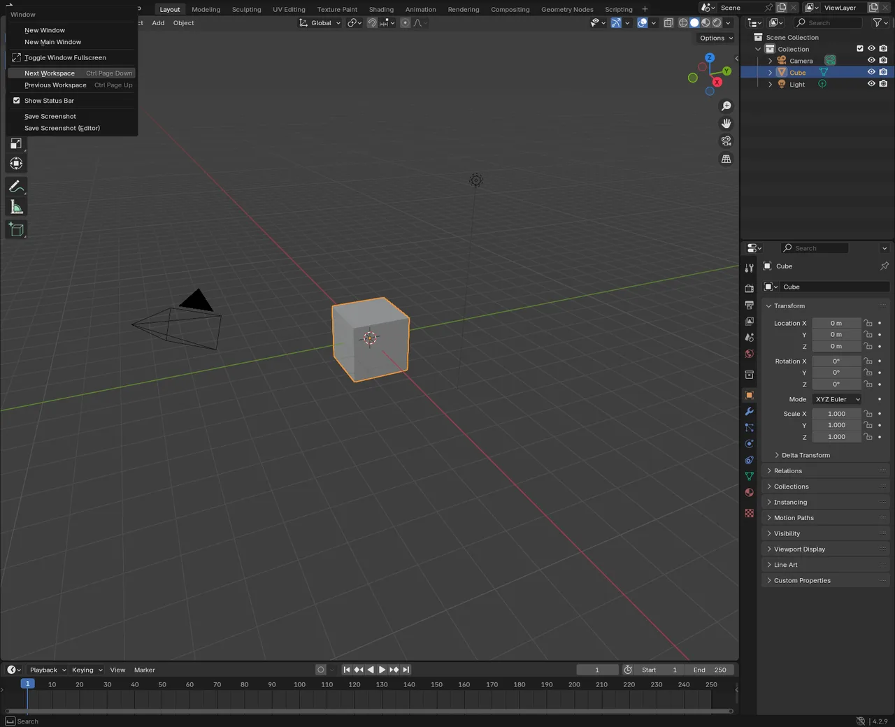
| Item | À quoi ça sert |
|---|---|
| New Window | Ouvrir une seconde fenêtre (utile sur deux écrans). |
| New Main Window | Nouvelle fenêtre avec sa propre barre supérieure et ses espaces de travail. |
| Toggle Window Fullscreen | Passer la fenêtre en plein écran. |
| Next / Previous Workspace | Passer à l'espace de travail suivant/précédent (Ctrl Page Up/Down). |
| Show Status Bar | Afficher/masquer la barre d'état en bas. |
| Save Screenshot… | Enregistrer une capture de toute la fenêtre (ou d'un seul éditeur). |
Menu Help — documentation et diagnostics
| Item | À quoi ça sert |
|---|---|
| Manual | Ouvre le manuel officiel en ligne (la référence ultime). |
| Tutorials / Support / Communities | Liens vers les tutoriels, le support et les communautés d'entraide. |
| Python API Reference | Documentation du scripting Python (pour l'automatisation, les add-ons). |
| Operator Cheat Sheet | Génère la liste de tous les opérateurs disponibles. |
| System | Infos système et options de debug (utile pour diagnostiquer un souci GPU). |
| Save System Info | Exporte un rapport système (à joindre à un rapport de bug). |
| Report a Bug | Ouvre le formulaire officiel de signalement de bug. |
| About Blender | Version, date de build, crédits. |
Le Viewport 3D — Object Mode
Dans le grand viewport 3D, une seconde barre de menus agit sur la scène et les objets. En Object Mode (le mode par défaut), on y trouve View, Select, Add et Object.
Menu View — la caméra d'édition et les panneaux
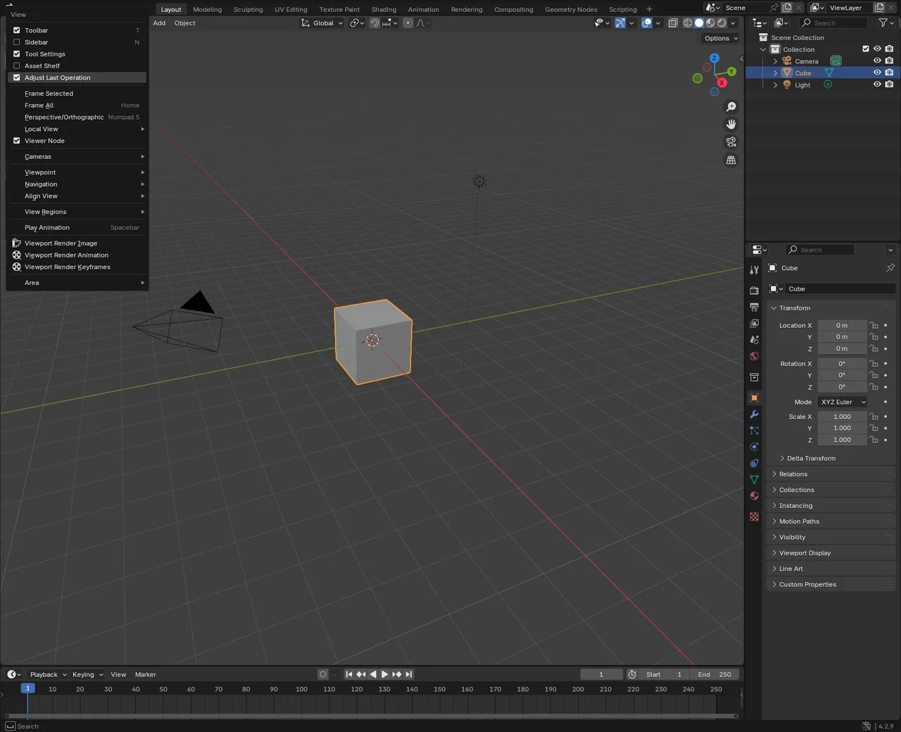
| Item | À quoi ça sert |
|---|---|
| Toolbar (T) | Afficher/masquer la barre d'outils (à gauche). |
| Sidebar (N) | Afficher/masquer le panneau latéral (Item, Tool, View) — Transform précis, etc. |
| Frame All (Home) | Recadrer la vue sur toute la scène. |
| Frame Selected (Pavé num . ) | Recadrer sur l'objet sélectionné. |
| Viewpoint | Vues prédéfinies : Front, Back, Top, Bottom, Left, Right (pavé numérique). |
| Navigation | Orbiter, panoramiquer, zoomer, voler/marcher dans la scène. |
| Align View | Aligner la vue sur la caméra, sur un axe, ou la caméra sur la vue. |
| Local View (/) | Isoler l'objet sélectionné (cacher le reste temporairement). |
| Cameras | Choisir/poser la caméra active. |
| Area | Gérer l'éditeur : plein écran (Ctrl Espace), dupliquer dans une fenêtre. |
Menu Select — choisir des objets
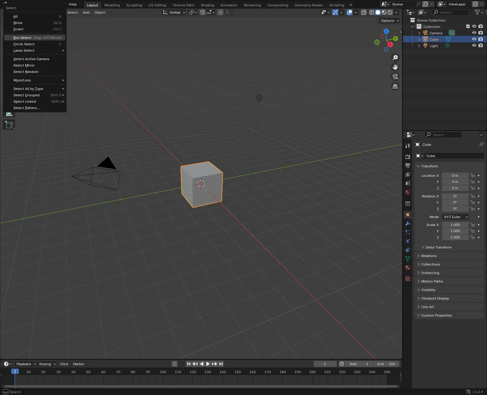
| Item | À quoi ça sert |
|---|---|
| All (A) | Tout sélectionner. |
| None (Alt A) | Tout désélectionner. |
| Invert (Ctrl I) | Inverser la sélection. |
| Box Select (B) | Sélection par rectangle. |
| Circle Select (C) | Sélection au pinceau circulaire. |
| Select All by Trait | Par caractéristique : type d'objet, calques, etc. |
| Select Random | Sélection aléatoire d'une partie des objets. |
| Select Mirror | Sélectionner l'équivalent symétrique. |
| Select More / Less (Ctrl +/−) | Étendre/réduire la sélection aux voisins. |
| Select Linked | Sélectionner les objets liés (même donnée, parent/enfant…). |
| Select Pattern… | Sélectionner par nom (avec des jokers *). |
Menu Add — créer un nouvel objet
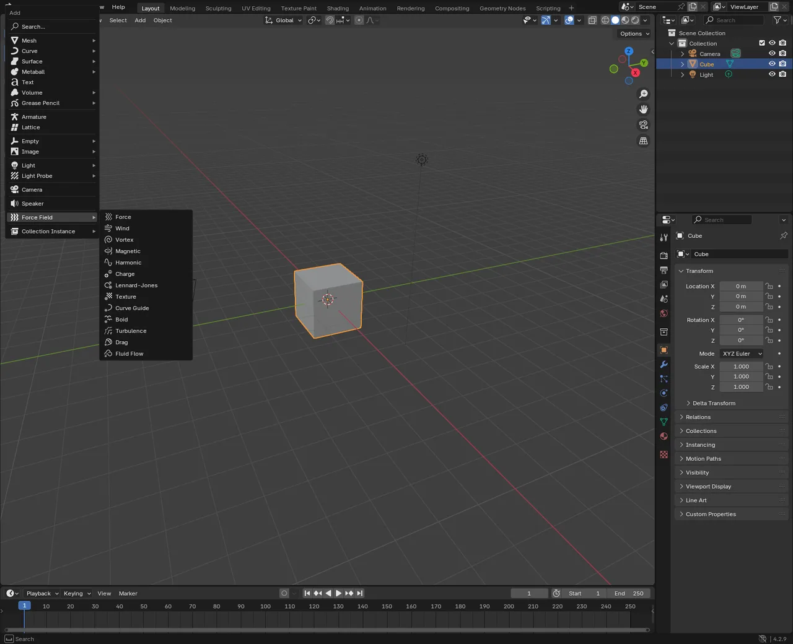
| Item | À quoi ça sert |
|---|---|
| Mesh | Objets à polygones : Cube, Sphere, Cylinder, Plane, Cone, Torus… — la base de la modélisation. |
| Curve | Courbes de Bézier/NURBS : chemins, câbles, tracés à extruder. |
| Surface | Surfaces NURBS (usage plus rare). |
| Metaball | Formes « liquides » qui fusionnent entre elles. |
| Text | Texte 3D éditable (extrudable). |
| Volume | Volumes (fumée, brouillard) importés (OpenVDB) ou vides. |
| Grease Pencil | Dessin 2D dans l'espace 3D (storyboard, animation traditionnelle). |
| Armature | Squelette d'os pour rigger et animer (voir B10). |
| Lattice | Cage de déformation pour tordre un objet globalement. |
| Empty | Objet invisible servant de repère, pivot ou parent. |
| Image | Image de référence ou plan texturé (background). |
| Light | Lumières : Point, Sun, Spot, Area. |
| Light Probe | Sondes de réflexion/irradiance pour l'éclairage temps réel (EEVEE). |
| Camera | Une caméra (point de vue du rendu). |
| Speaker | Source sonore positionnée dans l'espace. |
| Force Field | Champs de force pour la simulation : Wind, Vortex, Magnetic, Turbulence… |
| Collection Instance | Instancier une collection entière (réutiliser un ensemble d'objets). |
Menu Object — agir sur les objets sélectionnés
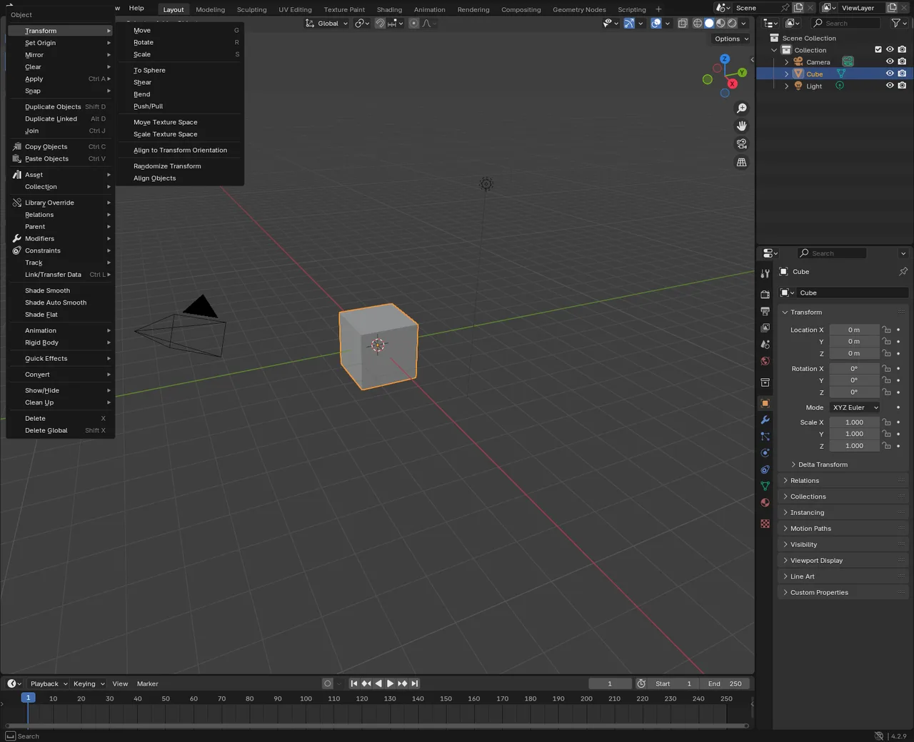
| Item | À quoi ça sert |
|---|---|
| Transform | Déplacer/tourner/échelonner précisément, aligner, distribuer. |
| Set Origin | Déplacer le point d'origine de l'objet (au centre, au curseur 3D…). |
| Apply (Ctrl A) | Appliquer Location/Rotation/Scale : remet Scale à 1 et Rotation à 0 sans changer la forme — indispensable avant export. |
| Snap | Aimanter l'objet ou le curseur (sur la grille, sur un élément…). |
| Parent (Ctrl P) | Rendre un objet enfant d'un autre (il suit ses mouvements). |
| Constraints | Ajouter des contraintes (Copy Location, Track To, Child Of…). |
| Collection / Relations | Ranger dans une collection, gérer les liens entre objets. |
| Join (Ctrl J) | Fusionner plusieurs objets en un seul (dans l'objet actif). |
| Duplicate Objects (Shift D) | Copie indépendante de l'objet. |
| Duplicate Linked (Alt D) | Copie liée (partage la même donnée : éditer l'un modifie l'autre). |
| Convert | Convertir le type (courbe → mesh, texte → mesh…). |
| Shade Smooth / Flat | Lisser ou facetter l'ombrage de l'objet. |
| Delete (X) | Supprimer les objets sélectionnés. |
Le Viewport 3D — Edit Mode
Quand tu entres en Edit Mode (touche Tab) sur un mesh, la barre de menus change : Add et Object laissent place à Mesh, Vertex, Edge, Face et UV. Ce sont les outils de modélisation pure (voir B3).
Menu Mesh — outils globaux du maillage
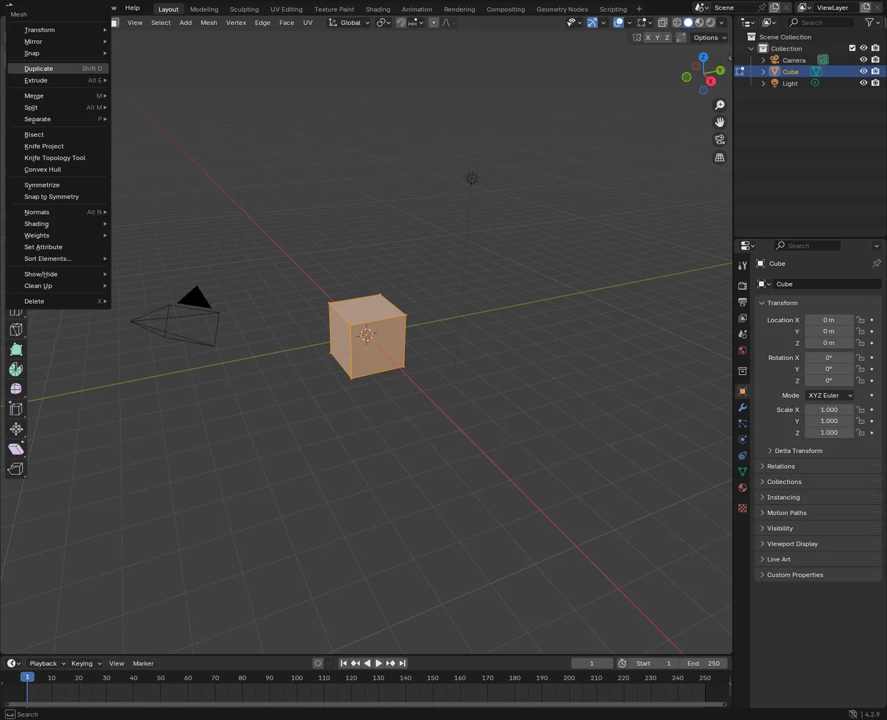
| Item | À quoi ça sert |
|---|---|
| Duplicate (Shift D) | Dupliquer la sélection (sommets/arêtes/faces). |
| Extrude (Alt E) | Tirer de la nouvelle géométrie (options d'extrusion). |
| Merge (M) | Fusionner des sommets (par distance, au centre, au curseur…). |
| Split / Separate (P) | Séparer la sélection (en morceaux, ou en un nouvel objet). |
| Bisect / Knife | Couper le maillage par un plan (Bisect) ou au couteau libre (Knife, K). |
| Symmetrize / Snap to Symmetry | Rendre le mesh symétrique à partir d'une moitié. |
| Normals (Alt N) | Recalculer/inverser les normales (Recalculate Outside corrige les faces retournées). |
| Shading | Marquer des arêtes Smooth/Flat. |
| Clean Up | Nettoyer : sommets isolés, faces dégénérées, doublons. |
| Delete (X) | Supprimer sommets/arêtes/faces, ou dissoudre. |
Menu Vertex — outils de sommets
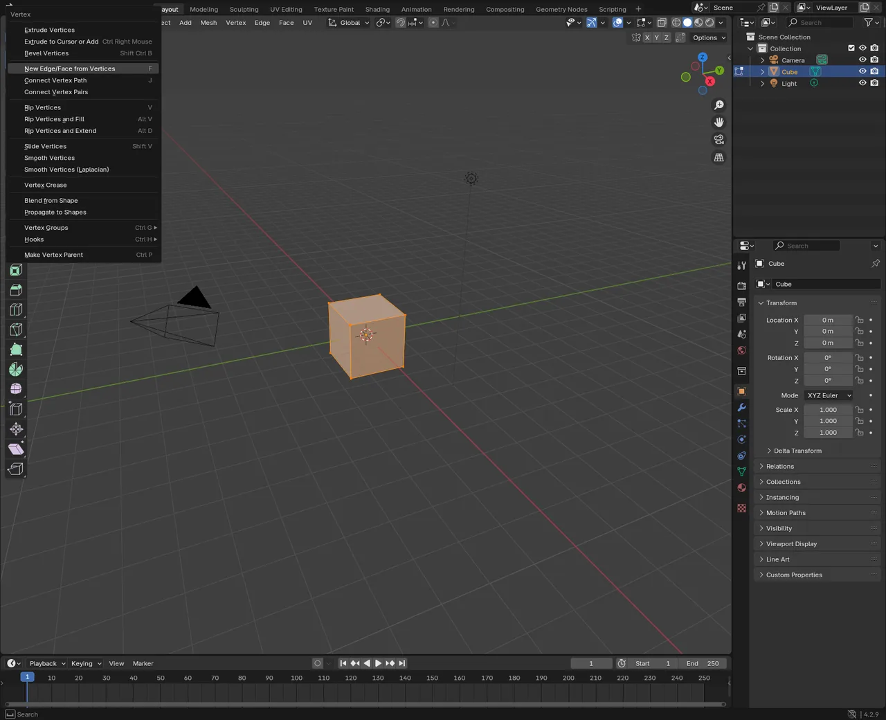
| Item | À quoi ça sert |
|---|---|
| Extrude Vertices | Étirer de nouveaux sommets/arêtes. |
| New Edge/Face from Vertices (F) | Créer une arête ou une face à partir des sommets choisis. |
| Connect Vertex Path (J) | Relier des sommets par une arête qui traverse la face. |
| Rip (V) | Déchirer le maillage à un sommet (créer une fente). |
| Slide | Faire glisser un sommet le long des arêtes. |
| Smooth Vertices | Lisser la position des sommets (relaxation). |
| Merge (M) | Fusionner des sommets. |
| Bevel Vertices (Ctrl Shift B) | Chanfreiner un coin (arrondir un sommet). |
| Make Vertex Parent (Ctrl P) | Parenter un objet à des sommets précis. |
| Hooks | Contrôler des sommets depuis un autre objet (déformation animable). |
Menu Edge — outils d'arêtes
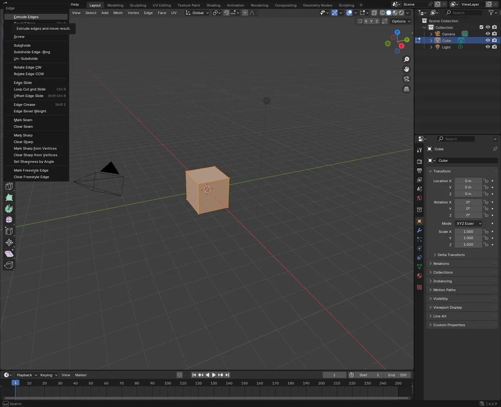
| Item | À quoi ça sert |
|---|---|
| Extrude Edges | Étirer de nouvelles faces depuis des arêtes. |
| Bevel (Ctrl B) | Chanfreiner une arête en plusieurs segments (essentiel pour capter la lumière). |
| Bridge Edge Loops | Créer un pont de faces entre deux boucles d'arêtes. |
| Subdivide | Diviser les arêtes (ajouter de la définition). |
| Loop Cut (Ctrl R) | Insérer une boucle d'arêtes complète autour du mesh. |
| Mark Seam / Clear Seam | Marquer les coutures pour le dépliage UV (voir B6). |
| Mark Sharp / Clear Sharp | Marquer une arête vive (pour l'ombrage / Auto Smooth). |
| Rotate Edge | Faire pivoter une arête entre deux triangles. |
| Edge Slide | Faire glisser une arête le long de la surface. |
Menu Face — outils de faces
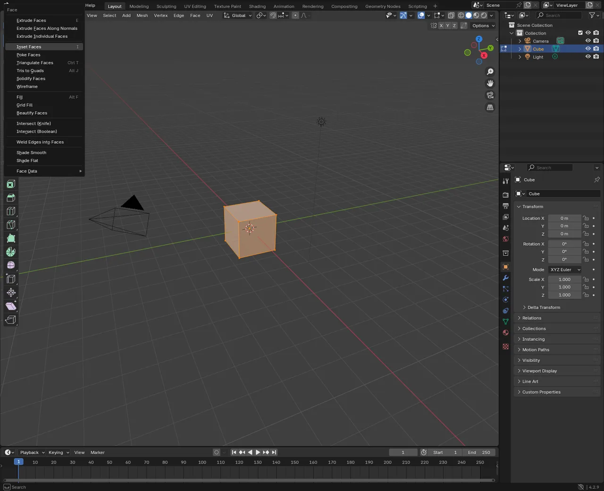
| Item | À quoi ça sert |
|---|---|
| Extrude Faces | Tirer des faces vers l'extérieur/intérieur. |
| Inset Faces (I) | Créer une face plus petite à l'intérieur (préparer un bouton, un cadre). |
| Poke Faces | Découper chaque face en triangles depuis son centre. |
| Solidify | Donner une épaisseur à une surface. |
| Fill (Alt F) / Grid Fill | Combler un trou (Fill) ou le remplir en quadrillage propre (Grid Fill). |
| Beautify Faces | Réorganiser les triangles pour un maillage plus régulier. |
| Intersect (Knife / Boolean) | Découper une face par une autre géométrie. |
| Flip Normals | Retourner les faces sélectionnées. |
| Shade Smooth / Flat | Ombrage lisse ou facetté par face. |
Les panneaux autour du viewport
Autour du viewport, quatre zones reviennent toujours. On les repère sur la vue d'ensemble ci-dessous (revois B2 pour la navigation).

| Panneau | Rôle |
|---|---|
| Barre d'outils (T) | À gauche du viewport : outils actifs (sélection, déplacer, tourner, échelle, annoter, mesurer…). |
| Outliner | En haut à droite : l'arborescence de la scène (objets, collections, données). On y sélectionne, range, masque. |
| Properties | À droite : une colonne d'onglets (Render, Output, View Layer, Scene, World, Object, Modifiers 🔧, Particles, Physics, Constraints, Data, Material). Chaque onglet regroupe les réglages d'un domaine. |
| Timeline | En bas : la lecture, les images-clés et le curseur de temps pour l'animation. |
Le panneau Properties, onglet par onglet
Le panneau Properties (à droite) est organisé en une colonne d'onglets (des icônes) qui filtrent les réglages par domaine. Cliquer sur une icône change tout le contenu affiché en dessous. Voici, de haut en bas, à quoi sert chaque onglet.
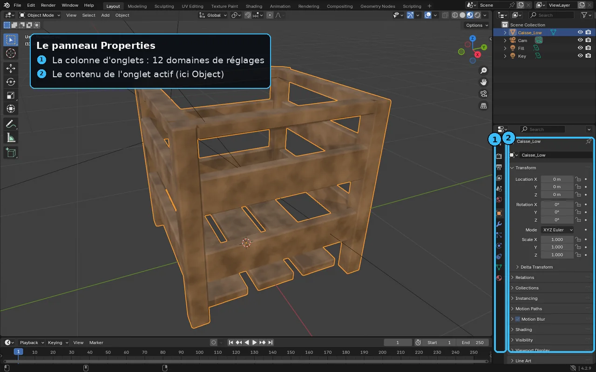
| Onglet | À quoi il sert |
|---|---|
| Active Tool | Réglages de l'outil actif de la barre d'outils (rayon d'une brosse, options de l'outil de découpe…). |
| Render | Le moteur de rendu (EEVEE ou Cycles), le nombre d'échantillons (samples), l'anti-aliasing, la qualité globale. |
| Output | La sortie : résolution, fréquence d'images, plage (Start/End), format et dossier des fichiers rendus. |
| View Layer | Les calques de rendu et les passes (isoler diffuse, ombres… pour le compositing). |
| Scene | La caméra active, les unités de mesure, la gravité, et la gestion des couleurs (color management). |
| World | L'environnement : couleur ou image de ciel (HDRI), éclairage d'ambiance global. |
| Object | Le Transform (Location/Rotation/Scale), la visibilité, les relations (parent, collections). |
| Modifiers (clé à molette) | La pile de modifiers non destructifs (Mirror, Bevel, Subdivision… — voir B4). |
| Particles | Les systèmes de particules : cheveux/fourrure, émissions, dispersion. |
| Physics | Les simulations : corps rigides, tissu, fluide, collisions, force fields. |
| Object Constraints | Les contraintes (Copy Location, Track To, Child Of…) qui pilotent l'objet automatiquement. |
| Object Data (triangle vert) | Les données du maillage : groupes de sommets, UV Maps, shape keys, attributs, normales. |
| Material (sphère à damier) | Les matériaux de l'objet et leurs emplacements (slots) — le point d'entrée du shading (voir B7). |
Les principaux éditeurs
Blender n'a pas de « fenêtres » fixes : chaque zone est un éditeur qu'on peut changer via le petit menu déroulant (une icône) en haut à gauche de la zone. C'est ainsi qu'on passe le viewport en Shader Editor, en UV Editor, etc. Les espaces de travail (Layout, Shading, UV Editing…) ne sont que des dispositions d'éditeurs préconfigurées. Voici les plus utiles.
| Éditeur | À quoi il sert |
|---|---|
| 3D Viewport | La vue 3D : modéliser, sculpter, animer, poser lumières et caméras. |
| Outliner | L'arborescence de la scène (objets, collections, données liées). |
| Properties | Les réglages par domaine (voir la section ci-dessus). |
| Shader Editor | Construire les matériaux par nœuds (voir B7). |
| UV Editor | Voir et éditer le dépliage UV (voir B6). |
| Image Editor | Voir, charger ou peindre une image / texture. |
| Geometry Node Editor | Géométrie procédurale par nœuds (voir B9). |
| Timeline · Dope Sheet · Graph Editor | L'animation : lecture, images-clés, et courbes d'interpolation. |
| Compositor | Le post-traitement du rendu par nœuds (glow, corrections, passes). |
| Video Sequencer | Montage vidéo (assembler des plans, du son). |
| Text Editor · Python Console | Écrire des scripts Python (automatiser, créer des add-ons). |
| File Browser | Parcourir les fichiers (s'ouvre lors d'un import/export/enregistrement). |
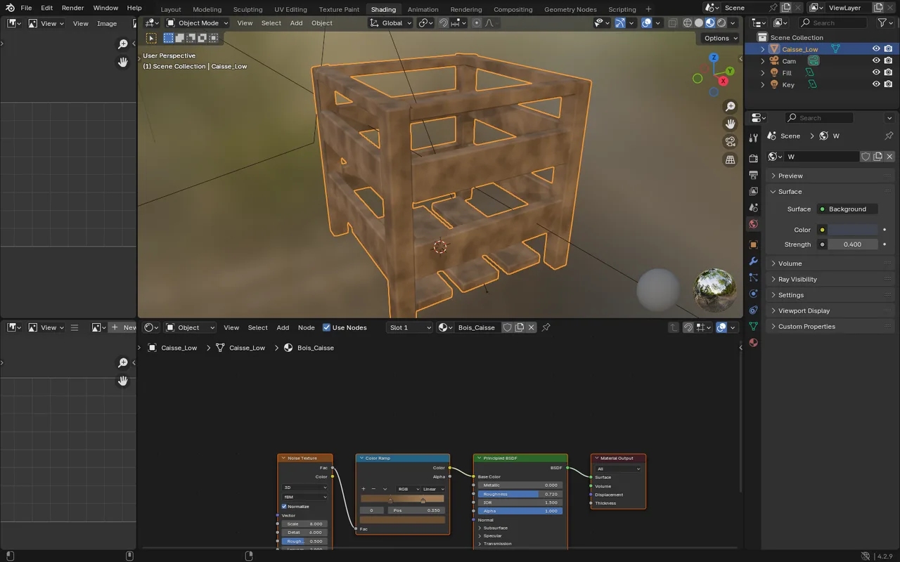
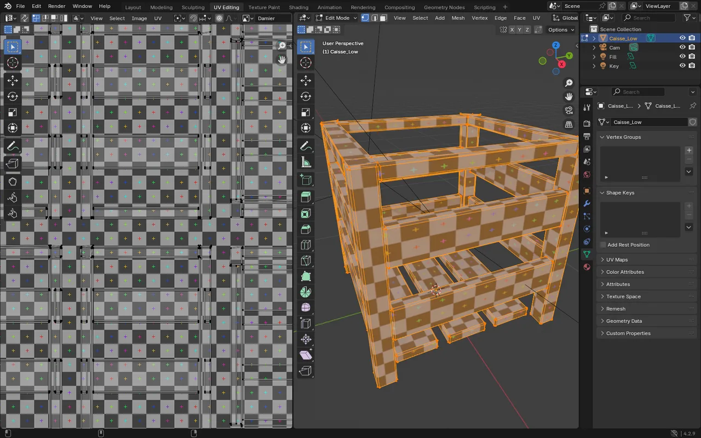
- La barre supérieure agit sur le fichier et l'appli : File (ouvrir/enregistrer, import/export), Edit (annuler, F3 = chercher une commande, Préférences), Render (F12), Window, Help (le manuel officiel).
- Le viewport 3D a ses propres menus : en Object Mode View / Select / Add / Object ; en Edit Mode ils deviennent Mesh / Vertex / Edge / Face.
- Deux réflexes qui sauvent : F3 pour chercher n'importe quelle commande, et Object ▸ Apply (Ctrl A) pour remettre Scale à 1 avant d'exporter.
- Le panneau Properties range les réglages par onglet (Render, Object, Modifiers, Material…) ; et chaque zone est un éditeur qu'on change via le menu en haut à gauche (viewport, Shader Editor, UV Editor…).
- Chaque capture de ce guide est cliquable pour l'agrandir : reviens ici dès que tu cherches « où est cette commande ? ».
Vérifie ta compréhension
Clique sur la réponse que tu penses correcte : la bonne réponse et une explication s'affichent aussitôt.
- Je sais ce que couvre chaque menu de la barre supérieure (File, Edit, Render, Window, Help).
- Je connais deux réflexes clés : F3 (chercher une commande) et Object ▸ Apply (Ctrl A) avant d'exporter.
- Je distingue les menus du viewport en Object Mode (View / Select / Add / Object) et en Edit Mode (Mesh / Vertex / Edge / Face).
- Je situe les panneaux autour du viewport : barre d'outils (T), Outliner, Properties, Timeline.
- Je sais que chaque zone est un éditeur interchangeable (viewport, Shader Editor, UV Editor…) et je repère les onglets du panneau Properties.
Pour aller plus loin
- B2 — L'interface de Blender : la navigation et l'organisation des éditeurs, pas à pas.
- B3 — Modélisation : mettre en pratique les menus Mesh / Vertex / Edge / Face.
- G2+ — Guide de l'interface Godot : le même tour complet, côté moteur de jeu.